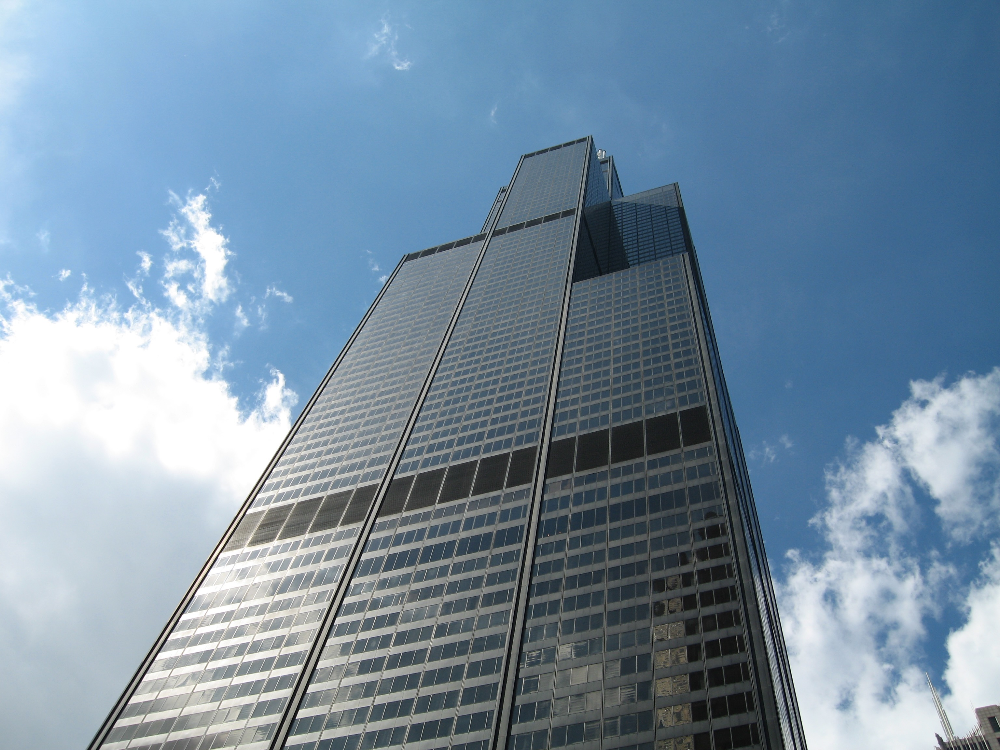

Chicago Downtown Trip
As I could not go to Pittsburgh with Binoy, I planned to go to Downtown Chicago with Amar last weekend. When approaching, I saw what looked like a huge mountain of cement in front of me. All those huge buildings in one place. At one point I thought what would happen if one building fell on another. It might trigger a cascade. I wish they do not fall.
The main motive behind visiting downtown was the Sears Tower. It is one of the highest buildings in the world. Taipei 101 has the highest floor, but its antenna has less height than the Sears Tower's. And the Petronas Towers have the highest antenna, but their highest floor has less height than the Sears Tower's. So both records – the highest antenna and the highest floor – are not with the Sears Tower now, but it is still a great man-made structure.
Here is the shot I took from the bottom of the great structure.

This is a shot taken from the top of the world. It was a clear day and I could see everything far into the distance.